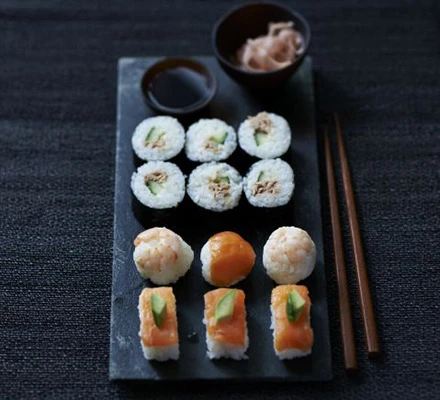

sushi

description
Kids can help with this Japanese dish. They can help cook the sticky rice and then roll and assemble the pieces with their preferred ingredients
ingredients
for the rice
- 300g sushi rice
- 100ml rice wine vinegar
- 2 tbsp golden caster sugar
for the japanese mayo
- 3 tbsp mayonaise
- 1 tbsp rice wine vinegar
- 1 tsp soy sauce
for the sushi
- 25g bag nori (seaweed) sheets
- choose from fillings: cucumber strips, smoked salmon, white crabmeat, canned tuna, red pepper, acacado, spring onion.
serve with
- wasabi
- pickled ginger
- soy sauce
steps
- lay a nori sheet on a rolling mat and pat a 1cm thick layer of rice on top
- spread over some japanese mayo
- add the filling/fillings chosen
- roll it up
- stick down the edge liike a stamp
- wrap in cling film
- cut into sections and then remove the cling film